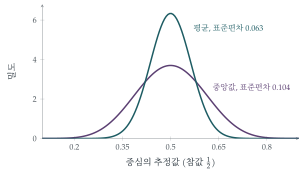

STEP II 2000, 문제 14
계속 읽기 전에 문제를 먼저 읽어 보자. 문제는 STEP Support Programme의 문제 데이터베이스에 있다: step.maths.org/questions/00-s2-q14
도입
측정값들의 중심을 추정할 때 평균(mean)을 쓸 수도 있고 중앙값(median)을 쓸 수도 있다. 어느 쪽이 더 나을까? 답은 데이터에 따라 달라진다. 가끔 터무니없는 오차가 섞이는 측정값이라면 중앙값이 훨씬 믿을 만하다. 엉뚱한 값 하나가 평균은 어디로든 끌고 갈 수 있지만 중앙값은 거의 움직이지 못한다. 반면 얌전한 데이터라면 대개 평균이 낫다. 이 문제는 균등분포(uniform distribution)를 따르는 데이터에서 평균이 얼마나 더 나은지를 측정한다. 중앙값의 분산(variance)은 평균의 분산의 세 배이므로, 중앙값이 평균만큼 정밀해지려면 관측값이 세 배 필요하다.
이 비교를 통해 통계적 방법을 고를 때의 주요 개념 가운데 하나인 효율(efficiency)과, 4.4 절에서도 나왔던 베타 적분(beta integral)을 소개한다.
시작하기 전에
중앙값의 확률밀도함수(density)가 왜 \(y^n(1 - y)^n\)에 비례할까? (\(Y\)가 \(y\) 근처에 있으려면 \(2n + 1\)개의 값 가운데 몇 개가 \(y\)보다 작아야 하고, 몇 개가 커야 할까?)
중앙값이 \(y\)에 있으려면 값 하나는 \(y\)에 있고, \(n\)개는 그보다 작고(각각 확률 \(y\)), \(n\)개는 그보다 커야 한다(각각 확률 \(1 - y\)). 이로부터 인수 \(y^n(1 - y)^n\)이 나온다. 상수는 어느 값이 어디에 속하는지를 고르는 방법의 수를 센 것이다.
차근차근 풀기
단계 1 상수
밀도함수를 적분하면 \(1\)이 되어야 한다. \[k\int_0^1y^n(1 - y)^n\,\mathrm{d}y = k\cdot\frac{n!\,n!}{(2n + 1)!} = 1, \qquad k = \frac{(2n + 1)!}{(n!)^2}. \qed\]
단계 2 평균과 분산
밀도함수는 \(\frac12\)에 대하여 대칭(symmetric)이므로(\(y\)를 \(1 - y\)로 바꾸어 보라) \(\mathrm{E}(Y) = \frac12\)이다.
베타 적분을 이용하여 \(\mathrm{E}(Y^2) = k\int_0^1y^{n+2}(1 - y)^n\,\mathrm{d}y\)를 계산하고 계승을 정리하라.
\[\mathrm{E}(Y^2) = \frac{(2n + 1)!}{(n!)^2}\cdot\frac{(n + 2)!\,n!}{(2n + 3)!} = \frac{(n + 2)(n + 1)}{(2n + 3)(2n + 2)} = \frac{n + 2}{2(2n + 3)}.\] 따라서 \[\mathrm{Var}(Y) = \frac{n + 2}{2(2n + 3)} - \frac14 = \frac{2(n + 2) - (2n + 3)}{4(2n + 3)} = \frac{1}{4(2n + 3)}. \qed\]
단계 3 평균과 비교하기
서로 독립인 균등분포 확률변수 \(2n + 1\)개의 평균 \(\bar X\)의 평균과 분산은 무엇인가?
각 \(X_i\)의 평균은 \(\frac12\), 분산은 \(\frac{1}{12}\)이므로 \(\mathrm{E}(\bar X) = \frac12\)이고 \(\mathrm{Var}(\bar X) = \frac{1}{12(2n + 1)}\)이다. \(n\)이 클 때 \[\mathrm{Var}(Y) \approx \frac{1}{8n}, \qquad \mathrm{Var}(\bar X) \approx \frac{1}{24n}.\]
\(Y\)와 \(\bar X\)가 평균이 \(\frac12\)이고 표준편차(standard deviation)가 각각 \(\sigma_Y\), \(\sigma_{\bar X}\)인 정규분포를 따른다면, 두 확률을 표준정규분포함수(standard normal distribution function) \(\Phi\)로 나타내라.
\(\mathrm{P}\bigl(|Y - \frac12| < \frac{d}{\sqrt n}\bigr) = 2\Phi\bigl(\frac{d}{\sqrt n\,\sigma_Y}\bigr) - 1\)이고 \(\sqrt n\,\sigma_Y \to \frac{1}{\sqrt8}\)이다. \(\bar X\)도 마찬가지로 \(\sqrt n\,\sigma_{\bar X} \to \frac{1}{\sqrt{24}}\)이다. 따라서 두 확률은 각각 \(2\Phi(d\sqrt8) - 1\)과 \(2\Phi(d\sqrt{24}) - 1\)에 수렴한다. \(\Phi\)는 증가함수이고 \(\sqrt{24} > \sqrt8\)이므로 두 번째 값이 더 크고, 따라서 충분히 큰 모든 \(n\)에 대하여 부등식이 성립한다.■ 평균이 참 중심에 가까이 있을 가능성이 더 크다.

돌아보기
베타 적분. \(\int_0^1y^r(1 - y)^s\,\mathrm{d}y\) 하나의 공식으로 정규화 상수(normalising constant)와 적률(moments)을 모두 구했다.
대칭성으로 평균을 구했다. \(\mathrm{E}(Y)\)를 구하는 데 적분이 필요 없었다.
퍼짐 정도는 알맞은 척도에서 비교한다. 표준편차에 \(\sqrt n\)을 곱하자 비교가 \(n\)에 의존하지 않게 되었다.
숨은 수학
효율
두 불편추정량(unbiased estimator)의 상대 효율(relative efficiency)은 두 분산의 비이다. 이는 한 추정량이 다른 추정량과 같은 정밀도를 얻으려면 관측값이 몇 배 필요한지를 말해 준다. 균등분포 데이터에서 중앙값의 평균에 대한 효율은 \(\frac13\)이다. 정규분포 데이터에서는 \(\frac2\pi \approx 0.64\)로, 중앙값은 관측값이 약 \(57\%\) 더 필요하다. 그러나 꼬리가 두꺼운(heavy-tailed) 데이터에서는 상황이 뒤바뀐다. 코시 분포(Cauchy distribution, 12.22 절)에서는 관측값 \(n\)개의 평균이 관측값 하나보다 나을 것이 없으므로 평균은 쓸모가 없지만, 중앙값은 잘 작동한다. 라플라스 분포(Laplace distribution, 12.24 절)에서는 중앙값이 평균보다 두 배 효율적이다.
로버스트 통계
중앙값은 로버스트(robust)하다. 데이터의 거의 절반을 임의의 값으로 바꾸어도 중앙값은 크게 움직이지 않는다. 평균에는 이런 보호 장치가 없어서 잘못된 값 하나만으로도 망가질 수 있다. 1960년대와 1970년대에 존 튜키(John Tukey), Peter Huber 등은 로버스트 통계(robust statistics)를 발전시켰다. 이는 깨끗한 데이터에서는 평균에 거의 버금가는 효율을 보이면서도 이상값(outlier)에 잘 견디는 추정량들로, 예를 들어 절사평균(trimmed mean)(가장 큰 값과 가장 작은 값 \(10\%\)씩을 버리고 나머지를 평균한 것)이 있다. 절사평균은 다이빙이나 체조 같은 스포츠의 채점에 쓰인다.
라플라스(Laplace)는 1774년에 오차가 이중지수분포(라플라스 분포)를 따르면 참값의 가장 좋은 추정값은 중앙값임을 보였다. 가우스(Gauss)는 1809년에 오차가 정규분포를 따르면 가장 좋은 추정값은 평균임을 보였고, 이로부터 최소제곱법(method of least squares)에 이르렀다. 어느 쪽이 옳은지는 오차가 어떻게 행동하는지에 달려 있으며, 통계학자들은 새로운 종류의 데이터가 나올 때마다 여전히 이 문제를 논쟁한다.
사고 기술
두 방법이 모두 평균적으로는 옳을 수 있다. 그 답이 얼마나 흔들리는지, 그리고 데이터가 많아질수록 그 흔들림이 얼마나 빨리 줄어드는지를 비교하라.
대학에서는 큰 표본에서 분산을 비교하는 점근적 효율(asymptotic efficiency)이, 모형이 틀렸을 수 있는 경우를 위한 로버스트성과 함께, 통계적 방법을 고르는 표준 도구로 쓰인다.
더 도전하기
중앙값의 밀도함수. 값 하나는 \([y, y + \delta y]\)에, \(n\)개는 그 아래에, \(n\)개는 그 위에 있는 경우를 세어 밀도함수 \(\frac{(2n + 1)!}{(n!)^2}y^n(1 - y)^n\)을 유도하라.
관측값 세 개. \(n = 1\)(균등분포 관측값 세 개)일 때 \(\mathrm{Var}(Y)\)와 \(\mathrm{Var}(\bar X)\)를 정확히 구하라. 어느 쪽이 더 작은가?
중간범위. 중심의 또 다른 추정량으로 중간범위(midrange) \(\frac12(\max + \min)\)가 있다. 관측값이 \(m = 2n + 1\)개인 균등분포 데이터에서 그 분산이 \(\frac{1}{2(m + 1)(m + 2)}\)임을 보여라. 평균과 비교하면 어떠한가? (13.3 절와 비교해 보라.)
이상값. 측정값 열한 개가 \(9.8\), \(9.9\), \(10.0\), \(10.0\), \(10.1\), \(10.1\), \(10.2\), \(10.2\), \(10.3\), \(10.4\), \(104\)(입력 실수)이다. 평균과 중앙값을 비교하라.
더 읽을거리
John Rice, Mathematical Statistics and Data Analysis (Duxbury). 순서통계량(order statistics)과 효율을 다룬다.
Rand Wilcox, Fundamentals of Modern Statistical Methods (Springer). 로버스트 방법이 왜 중요한지를 비전문가에게 설명한다.
Stephen Stigler, The Seven Pillars of Statistical Wisdom (Harvard University Press). 자료의 집계, 평균과 중앙값을 역사적 관점에서 살펴본다.